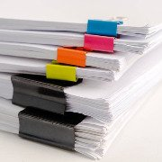

新闻 · 2026-11-21 12:00
“AI检出率”致作者陷自证困局：论文改到“学生作文水平”才达标，却没了学术性
澎湃新闻报道，知网、万方、维普等平台AIGC检测结果波动大，原创内容频被误判，致使作者在投稿、答辩和职称申报中陷入自证困境。中医方向科研人员小马称，其文章常规重复率仅0.5%，知网系统升级后AIGC检测数值增至35%，而投稿杂志社要求AI率低于20%，他改到指标达标却被杂志社以口语化严重、缺少学术性退回；其友人完全手写的文稿被判定AI特征值达100%。报道称部分高校、期刊已划定论文AIGC检测率，有期刊规定超15%不予送审。

来源与核验
单一信源报道，未交叉核实